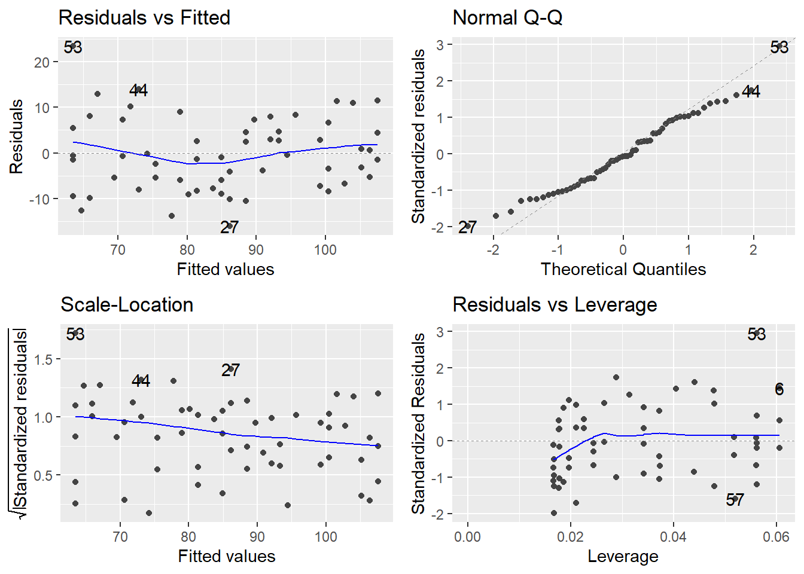
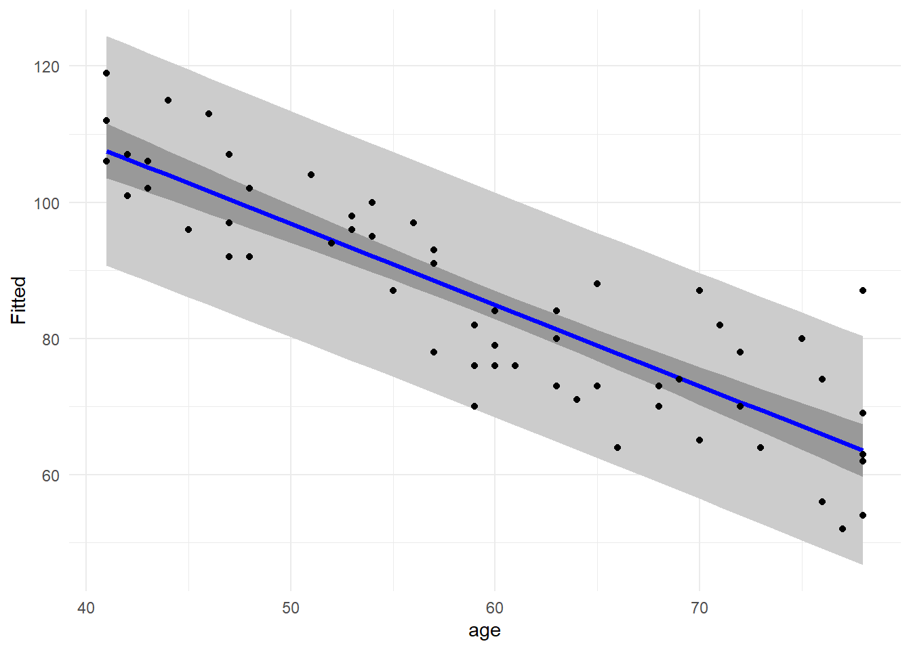
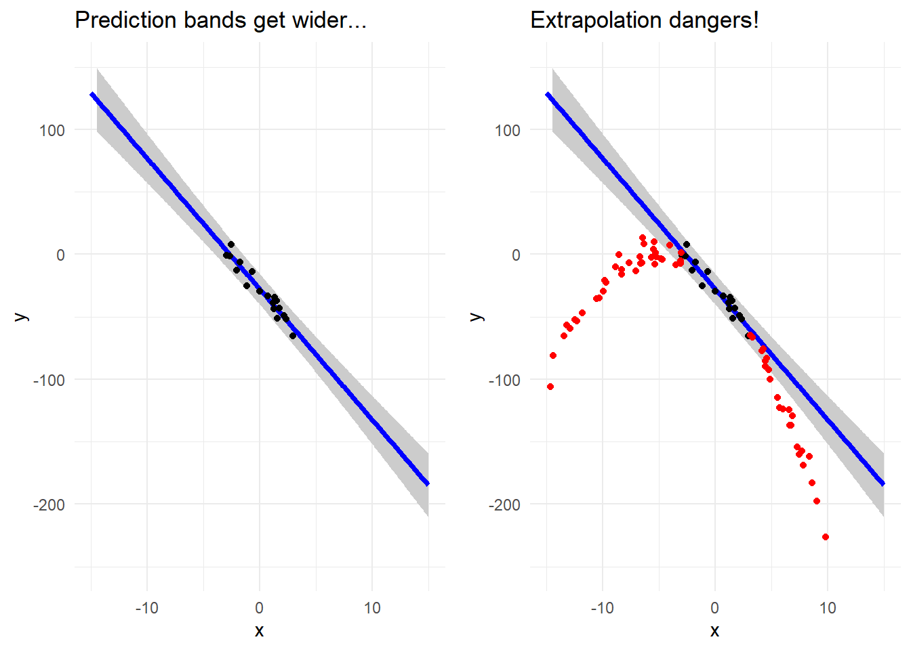
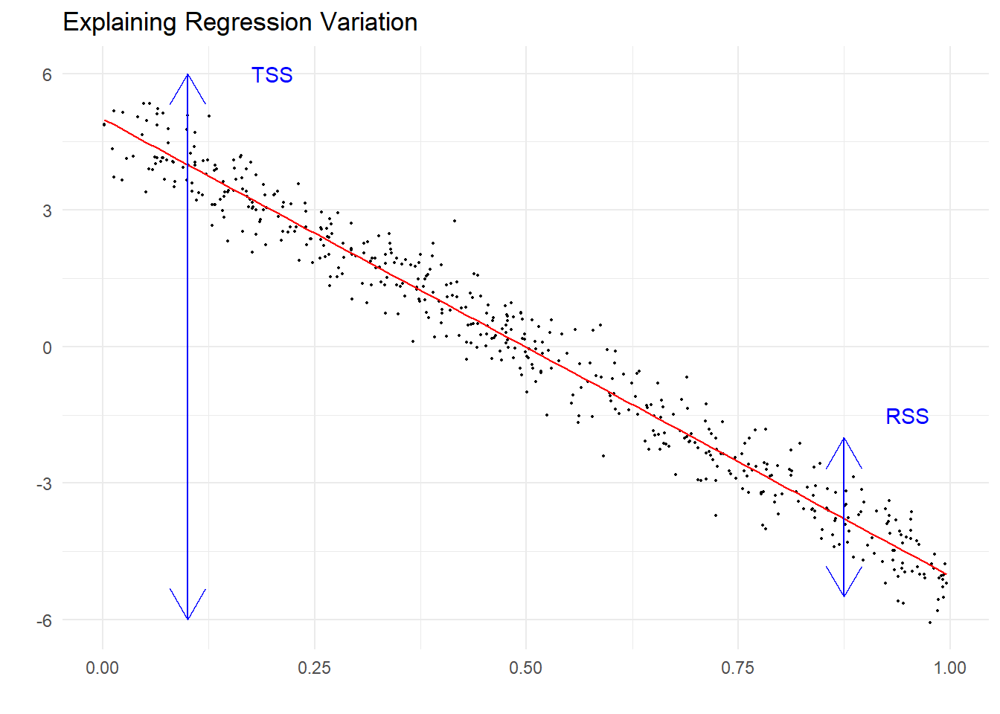

Chapter 6 Inference regarding Multiple Regression
We now start the discussion of using the least squares simple linear regression model for the purpose of statistical inference about the parent population from which the sample was drawn. Remember that by “inference,” we mean finding relevant confidence intervals or running hypothesis tests about various aspects of the modeled relationship. After this unit, you should be able to
- Statistically determine if a model significantly predicts a response variable
- Test each predictor variable’s ability to significantly predict the response and measure its impact with a confidence interval
- Determine the amount of variation in the response variable explained by the model
6.1 Assumption checking
Any time we run a hypothesis test or build a confidence interval in the context of a regression analysis, the validity of the findings depends on several assumptions being met. These assumptions need to be checked in advance using regression diagnostics. Think of diagnostics as preventative medicine for your data.
The five collective assumptions for a standard regression models are as follows:
- Error assumptions:
- The errors are independent (the independence assumption)
- The errors have homogeneous variance (the constant variance assumption)
- The errors are normally distributed (the normality assumption)
- Linearity assumption: We assume that the structural part of the linear regression model is correctly specified.
- Unusual observations: Occasionally, a few observations may not fit the model well. These have the potential to dramatically alter the results, so we should check for them and investigate their validity.
You’ll note these assumptions are nearly identical to those we discussed in experimental design. We will diagnose the assumptions in a similar fashion.
Recall from earlier that the general form of a model is
\[\textbf{Data} = \textbf{Systematic Structure} + \textbf{Random Variation}\]
Since modeling seeks to identify structure in the data, the goal of a good model is to capture most (if not all) of the structure in the first partition, leaving nothing but random noise in the “leftovers.” All of our assumptions deal, in one way or another, with studying the random variation component via inspection of the residuals from a fitted model. The motivation is that if all things are satisfactory, there should be no structure, pattern or systematic behavior remaining in the errors.
Diagnostic techniques can be either graphical or numerical, but we will focus on graphical diagnostics of the assumptions. The important thing to keep in mind when you fit a regression model is that the first model you try might prove to be inadequate. Regression diagnostics often suggest improvements or remedies, which means that model building is an iterative and interactive process. It is quite common to repeat diagnostics on a succession of models fit to the same data.
This section is only meant to provide you with the means to run a cursory check of the assumptions in a simple linear regression problem. We will deal with specific issues and remedies for addressing assumption violations in more detail later in the book.
Example Muscle mass. Consider the age and muscle mass dataset from earlier. Before using the muscle mass regression model to perform tests/CIs about the mass vs. age relationship, check the regression assumptions. This can be achieved by using the autoplot() function on the fitted lm object.
muscle.fit <- lm(mass ~ age, data=muscle)
autoplot(muscle.fit)
The QQ-Plot assesses normality of the \(\varepsilon\) terms (we wish for the empirical quantiles to closely match the theoretical, resulting in a fairly straight line). Constant variance is assessed based on the other three plots (should see no systematic patterns in the residuals) and independence is determined based on the design of our experiment or data collection procedure.
Linearity assumption
We have fit a straight-line model to the data. If the actual trend that relates muscle mass to age is linear, then this way of defining the structural part of the model should adequately explain all the systemic trends in the data. If it is not adequate, then we would still be observing trend in the residuals.
To check, we return to the Residuals vs Fitted plot, specifically, the trend line in this plot. If the linearity assumption were being met, the residuals should bounce randomly around the \(e_i = 0\) line, resulting in a roughly flat (horizontal) smoother. The subtle curvature in this line here suggests that we might need to fit a model that accommodates curvature in the response/predictor relationship. That is, the linearity assumption here seems to be mildly violated.
Unusual observations
In regression, there are two basic classifications of unusual observations:
Outliers. These are relatively isolated observations that are poorly predicted by the fitted model, i.e. observations that are “extreme” in the \(Y\)s. Outliers can inflate the SE of the residuals, resulting in the potential masking of truly significant effects and confidence intervals that are too wide. Outliers are determined by looking at each point’s standardized residual value, denoted \(r_i\), and is considered high if \(r_i > |3|\).
High-leverage points. These are observations whose predictor values are far from the center of the predictor space, i.e. observations that are unusually “extreme” in \(X\). High-leverage points have the potential to exert greater influence on the estimation of the \(\beta\)-coefficients in our model. Leverage is measured by something known as a hat value, denoted \(h_i\), and is considered high if \(h_i > 2p/n\).
The plot labeled Residuals vs Leverage (in the lower right hand corner of the diagnostic plot quartet) provides a nice visualization of both the standardized residuals and hat values. Suspect points are flagged in R by their observation number. Observation 53 appears to be a potential outlier. Since none of the leverage values appear to be above \(2p/n = 4/60 = 0.0667\), we do not have any high leverage points.
We will discuss this phenomenon later when we learn about Cook’s Distance.
6.2 Overall \(F\)-test for model signifance
Before proceeding to investigating the effects of the individual predictors one at a time, we usually perform a “whole-model” test to first confirm that there is merit (i.e. “utility”) to the model. This is in essence testing the following hypotheses:
\(H_0:\) none of the predictor variables (\(X_i\)’s) are useful in determining the response
\(H_a:\) at least one of the predictor variables is useful in determining the response
Since the general form of the model is \(Y = \beta_0 + \beta_1 X_1 + \beta_2 X_2 + \ldots + \beta_k X_k + \varepsilon\), these hypotheses can be equivalently written in terms of the model’s \(\beta\)-parameters as follows:
\[H_0: \beta_1 = \beta_2 = \ldots = \beta_k = 0 ~~~~\textrm{vs.}~~~~ H_a: \textrm{at least one} \beta_i \neq 0\]
One way of thinking about testing this null hypothesis is to think about fitting two models to the data, one using all the predictors (the ‘full” model), and the other using none of the predictors (a “reduced” null model), and seeing if there is a significant difference between them. Thinking this way, the hypotheses may be rewritten again as:
\[H_0: \textrm{the model is } Y = \beta_0 + \varepsilon ~~\textrm{vs.}~~ H_a: \textrm{the model is } Y = \beta_0 + \beta_1 X_1 + \beta_2 X_2 + \ldots + \beta_k X_k + \varepsilon\]
We now construct a test statistic that compares the residual variance of the two models. We fit both the full \(H_a\) model and the reduced \(H_0\) model and obtain their respective residual sums of squares values. It is a mathematical fact that \(RSS_{H_a} \geq RSS_{H_0}\) (thought exercise: why?), so if the difference \(RSS_{H_a}-RSS_{H_0}\) is small, then the fit of the reduced \(H_0\) model is almost as good as the full \(H_a\) model, so we would prefer the reduced model on the basis of simplicity. On the other hand, if the difference is large, then the superior fit of the full \(H_a\) model would be preferred. If we scale this difference by how much error variation was in the full model in the first place, then this suggests that something like
\[\frac{\textrm{Reduction in error variance, }H_0 \textrm{ model} \rightarrow H_a\textrm{ model}}{\textrm{Error variance in }H_a \textrm{ model}} \leftrightarrow \frac{RSS_{H_a}-RSS_{H_0}}{RSS_{H_a}}\]
would potentially be a good test statistic.
In practice, we will use what is known as ANOVA F-statistic to compare the numerator variance to the denominator variance:
\[F = \frac{\left(RSS_{H_a}-RSS_{H_0}\right)/\left(\textrm{error }df_{H_a} - \textrm{error } df_{H_0}\right)}{RSS_{H_a}/\textrm{error } df_{H_a}}\]
Under the usual regression assumptions, this \(F\)-ratio follows a sampling distribution known as an \(F\)-distribution. \(F\)-distributions have two parameters: the degrees of freedom for the numerator, and the degrees of freedom for the denominator. Yes, it is the same underlying test as that in ANOVA from experimental design!
\(F\)-statistics are the standard method for comparing two variances. Here’s what could happen:
If \(F\) is too large, we reject \(H_0\) in favor of \(H_a\) and conclude that at least one of the predictor variables is useful in determining the response (i.e. at least one \(\beta_i \neq 0\)).
If \(F\) is small, fail to reject \(H_0\) in favor of \(H_a\) and conclude that there is insignificant evidence to conclude that at least one of the predictor variables is useful in determining the response.
The “whole-model” F-test for model utility is generally assessed first when fitting a model.
Example. Property Appraisals.
Recall the property appraisal dataset from chapter 5.
load("appraisal.RData")
appraisal.fit <- lm(saleprice ~ landvalue + impvalue + area, data=appraisal)
summary(appraisal.fit)##
## Call:
## lm(formula = saleprice ~ landvalue + impvalue + area, data = appraisal)
##
## Residuals:
## Min 1Q Median 3Q Max
## -14688 -2026 1025 2717 15967
##
## Coefficients:
## Estimate Std. Error t value Pr(>|t|)
## (Intercept) 1384.197 5744.100 0.24 0.8126
## landvalue 0.818 0.512 1.60 0.1294
## impvalue 0.819 0.211 3.89 0.0013 **
## area 13.605 6.569 2.07 0.0549 .
## ---
## Signif. codes: 0 '***' 0.001 '**' 0.01 '*' 0.05 '.' 0.1 ' ' 1
##
## Residual standard error: 7920 on 16 degrees of freedom
## Multiple R-squared: 0.898, Adjusted R-squared: 0.878
## F-statistic: 46.7 on 3 and 16 DF, p-value: 3.87e-08The \(F\)-statistic on 3 and 16 degrees of freedom is 46.72, with p-value < 0.0001. We reject \(H_0\) and conclude at least one predictor is useful for predicting sales price.
Two things to be aware of:
What if we fail to reject \(H_0\)? Does that mean that none of the predictors matter? No. A failure to reject the null hypothesis is not the end of the game — you may just have insufficient data to detect any real effects, which is why we must be careful to say “fail to reject” the null rather than “accept” the null. It would be a mistake to conclude that no real relationships exist. We may have misspecified the structural form of the model or there may be unusual observations obscuring a real effect.
What if we reject \(H_0\)? By the same token, when \(H_0\) is rejected, this does not mean that we have found the best model. All we can say if that at least one of the predictors is useful. We don’t know whether all the predictors are required to predict the response, or just some of them. Other predictors might also be added. Either way, the omnibus \(F\)-test is just the beginning of an inferential analysis, not the end. What follows next are the more detailed assessments of the individual predictors.
6.3 Individual parameter inference
After running a whole-model \(F\)-test and determining that the fitted model has utility (i.e. if we rejected \(H_0: \beta_1 = \beta_2 = \ldots = \beta_k = 0\)), we may proceed to running tests or finding confidence intervals for the individual \(\beta_i\) parameters. These inferences may be used to
- Determine which predictors are significant predictors of the mean response
- Estimate the size of the partial effect of each predictor on the response
- “Streamline” the model through the removal of insignificant predictors
The last point above will serve as our first taste of model building, i.e. the “arts and crafts” aspect of tweaking a model so that it best explains the observed patterns and trends in the data. There will be much more on this later, but for now we can at least see a bit of it in action.
The calculated values of \(b_i\) are just point estimates of the true values \(\beta_i\) for the population relationship. \(\beta_i\) is an unknown parameter, so we use our estimate \(b_i\) to build confidence intervals or run hypothesis tests about \(\beta_i\) (much like in Intro stat when you used \(\bar{x}\) as a proxy for \(\mu\)). While \(\beta_0\) is usually of limited interest (and only in specific circumstances), the remaining \(\beta_i\) terms are critical parameters because it measures the “true” linear rate of change in \(Y\) as \(X_i\) is increased by one unit.
6.3.1 \(t\)-tests
The usual parameter test of interest in regression deals with the slope on term \(X_i\):
\[H_0: \beta_i = 0~~~~\textrm{versus}~~~~ H_a: \beta_1 \neq 0\]
This null hypothesis basically states that \(X_i\) and \(Y\) have no linear relationship. Rejection of this null hypothesis offers statistical confirmation that there is a significant linear relationship between \(X_i\) and \(Y\). The test statistic for this is a \(t\)-statistic, and is given by
\[t=\frac{\textrm{point estimate}-\textrm{hypothesized value}}{\textrm{standard error of point estimate}} = \frac{b_i - 0}{SE_{b_i}}\]
and is provided in the summary() output in R.
Example. Property Appraisals Consider individual test from the Property Appraisal data.
summary(appraisal.fit)##
## Call:
## lm(formula = saleprice ~ landvalue + impvalue + area, data = appraisal)
##
## Residuals:
## Min 1Q Median 3Q Max
## -14688 -2026 1025 2717 15967
##
## Coefficients:
## Estimate Std. Error t value Pr(>|t|)
## (Intercept) 1384.197 5744.100 0.24 0.8126
## landvalue 0.818 0.512 1.60 0.1294
## impvalue 0.819 0.211 3.89 0.0013 **
## area 13.605 6.569 2.07 0.0549 .
## ---
## Signif. codes: 0 '***' 0.001 '**' 0.01 '*' 0.05 '.' 0.1 ' ' 1
##
## Residual standard error: 7920 on 16 degrees of freedom
## Multiple R-squared: 0.898, Adjusted R-squared: 0.878
## F-statistic: 46.7 on 3 and 16 DF, p-value: 3.87e-08\(H_0: \beta_1 = 0\) (appraised land value has no effect on sales price, after adjusting for appraised value of improvements and area of living space)
\(H_a: \beta_1 \neq 0\) (appraised land value has an effect on sales price, after adjusting for appraised value of improvements and area of living space)
The test statistic is \(t = 1.599\) (with df=16), and p-value = 0.1294. We fail to reject \(H_0\) and conclude that appraised land value has no significant effect on sales price, after adjusting for appraised value of improvements and area of living space.
\(H_0: \beta_2 = 0\) (appraised value of improvements has no effect on sales price, after adjusting for appraised land value and area of living space)
\(H_a: \beta_2 \neq 0\) (appraised value of improvements has an effect on sales price, after adjusting for appraised land value and area of living space)
The test statistic is \(t = 3.889\) (with df=16), and p-value = 0.0013. We reject \(H_0\) and conclude that appraised value of improvements has a significant effect on sales price, after adjusting for appraised land value and area of living space.
\(H_0: \beta_3 = 0\) (area of living space has no effect on sales price, after adjusting for appraised value of land and improvements)
\(H_a: \beta_3 \neq 0\) (area of living space has an effect on sales price, after adjusting for appraised value of land and improvements)
The test statistic is \(t = 2.071\) (with df=16), and p-value = 0.0549. We reject \(H_0\) and conclude that the area of living space has a marginally significant effect on sales price, after adjusting for appraised value of improvements and area of living space.
Summary: The appraised value of improvements is the most significant predictor of sales price. Area of living space is marginally significant and appraised land value is not significant.
6.3.1.1 Modeling trimming
What about insignificant predictors? At this point, one might wonder about the need for retaining appraised land value (landvalue) as a predictor due to its insignificance. In fact, we may delete insignificant predictors (one at a time) to see the effect on the quality of the fit. Remember: a simple model that does essentially as well as a more complex model is preferred.
So, here’s what happens by deleting landvalue as a predictor (we actually did this in the last lecture to see the effect on the \(\beta\) parameters):
summary(lm(saleprice ~ impvalue + area, data=appraisal))##
## Call:
## lm(formula = saleprice ~ impvalue + area, data = appraisal)
##
## Residuals:
## Min 1Q Median 3Q Max
## -15832 -5200 1260 4642 13836
##
## Coefficients:
## Estimate Std. Error t value Pr(>|t|)
## (Intercept) -10.191 5931.634 0.00 0.99865
## impvalue 0.959 0.200 4.79 0.00017 ***
## area 16.492 6.599 2.50 0.02299 *
## ---
## Signif. codes: 0 '***' 0.001 '**' 0.01 '*' 0.05 '.' 0.1 ' ' 1
##
## Residual standard error: 8270 on 17 degrees of freedom
## Multiple R-squared: 0.881, Adjusted R-squared: 0.867
## F-statistic: 63 on 2 and 17 DF, p-value: 1.37e-08The quality of the fit of this model is comparable, albeit a bit worse, to the model containing all three predictors. Consider:
- The residual SE has increased from \(s\) = 7915 to \(s\) = 8269. In other words, the quality of
salepricepredictions suffers somewhat by deletinglandvalueas a predictor, even though it is statistically insignificant. For this reason, we may wish to retain it.
This is actually a wise method of determining the “value” of a predictor to the model. Another (equivalent) way is to look at the adjusted \(R^2\) values for the two models. We will cover that aspect shortly.
6.3.2 Confidence Intervals
As stated before, confidence intervals are usually more informative than tests. The form of these intervals is no different than for t-based CIs you’ve seen previously:
\[b_i + t_{0.025}\times SE_{b_i}\]
The point estimates and their SEs were provided in the R output from summary().
After fitting the linear model, getting 95% CIs for \(\beta_i\) is a snap with the confint() function:
confint(appraisal.fit)## 2.5 % 97.5 %
## (Intercept) -1.07928e+04 13561.14546
## landvalue -2.66591e-01 1.90219
## impvalue 3.72807e-01 1.26608
## area -3.21529e-01 27.53168We focus only on interpretation of the significant predictors:
- After adjusting for appraised land value and area of living space of a given property, we can be 95% confident that each additional dollar of appraised value of improvements is worth, on average, an additional $0.37 to $1.26 to the sale price.
- We could make a statement about the CI for the adjusted effect of area of living space (95% CI for area is essentially (0, 27.53)). This interval skirts the value of 0 because of the marginal significance of the partial effect. So, we could say that after adjusting for appraised land and improvements values of a given property, we can be 95% confident that each square foot of living space is worth, on average, no more than $27.53 to the sale price.
6.3.3 Confidence and prediction bands
If we are satisfied with the quality of the fit of a multiple linear regression model (i.e. if we feel the residual SE is low enough to facilitate decent predictions), we may use the model to generate CIs or PIs for the response variable \(Y\) given some settings for the predictor variables \(X_1\), \(X_2\), \(\ldots\), \(X_k\). The only caveat to keep in mind when finding such CIs/PIs is the issue of extrapolation outside the region of the observed values of the predictors (called the predictor space). You should stay inside the observed joint region of the predictors when making such predictions. We begin with a look at our simple linear regression example, the muslce mass dataset, for visualization and explanation.
One of the great uses of regression models is to generate useful predictions of the response variable \(Y\) given some setting for the predictor variable \(X\).
Given a hypothetical value of \(X\) (call it \(x_0\)), what is the predicted response value? For example, what is the predicted mean muscle mass for a 65 year old woman? Easy:
\[\hat{Y} = 156.35 - 1.19(65) = 79.0\]
However, as good statisticians we know that the above result is not sufficient. Remember: it’s only an estimate of \(\mu_{Y|X=65}\), the true mean muscle mass of women age 65. We would like to construct confidence limits around this estimate to get an idea of its precision.
There are actually two kinds of “prediction” that can be made using \(\hat{Y}\) as our point estimate. The distinction is between
- prediction of the mean response value at a given \(X\) value
- prediction of a future individual response at a given \(X\) value
For example,
- We could obtain an interval estimate for the true mean muscle mass of all 65 year old women; or,
- We could obtain an interval estimate for the muscle mass of an individual unobserved 65 year old woman.
Why would these be different? It is because if we are estimating the true mean response at a given \(X\) value, the only contributor to the uncertainty of the prediction is the uncertainty in the line (i.e. uncertainty due to the slope and intercept estimates). On the other hand, if we are estimating a future individual response value at a given \(X\) value, the contributors to the uncertainty of the prediction are both the uncertainty in the line and the variation in the individual points about the line. Thus, the \(SE\) for the prediction of a single future response value will be larger than the SE for predicting a mean response value.
To help distinguish between the two kinds of intervals, we will call an interval estimate for the true mean response a confidence interval (CI) (also known as a confidence band) for the mean response, and an interval estimate for an individual future response value a prediction interval (PI) (also known as prediction bands) for an individual response. Which one is more appropriate depends on context, but confidence intervals are used more frequently in practice.
The predict() extractor function in R will generate CIs and PIs from a linear model object according to your specifications for values of \(X\):
muscle.fit <- lm(mass~age,data=muscle)
predict(muscle.fit, newdata=data.frame(age=65), int="conf")## fit lwr upr
## 1 78.9969 76.6987 81.295predict(muscle.fit, newdata=data.frame(age=65), int="pred")## fit lwr upr
## 1 78.9969 62.4758 95.5179Note that the fitted value (labeled fit) is the same for both (78.996). However, the 95% PI for muscle mass of an unobserved 65 year old woman is 62.5 to 95.5, whereas the 95% CI for the mean muscle mass of all 65 year old women is 76.7 to 81.3. Thus, we can formally interpret the intervals as follows:
- We can be 95% confident that the true mean muscle mass for the entire population of women aged 65 years is between 76.7 to 81.3.
- We can be 95% confident that the true muscle mass for a single random selected female aged 65 will be between 62.5 to 95.5.
If we had deleted newdata=data.frame(age=65) from the predict() function call, we would get PIs (or CIs) for every age value that occurred in the original data set. However, since the values of age appear in random order, it might be a bit nicer to first sort them, and then generate the intervals:
muscle.trim <- muscle %>%
distinct(age) %>%
arrange(age)
predict(muscle.fit, newdata=muscle.trim, int="pred")## fit lwr upr
## 1 107.5567 90.7083 124.4052
## 2 106.3668 89.5541 123.1794
## 3 105.1768 88.3980 121.9555
## 4 103.9868 87.2401 120.7334
## 5 102.7968 86.0803 119.5133
## 6 101.6068 84.9185 118.2950
## 7 100.4168 83.7549 117.0787
## 8 99.2268 82.5893 115.8642
## 9 95.6568 79.0811 112.2325
## 10 94.4668 77.9078 111.0258
## 11 93.2768 76.7325 109.8211
## 12 92.0868 75.5553 108.6183
## 13 90.8968 74.3761 107.4175
## 14 89.7068 73.1950 106.2186
## 15 88.5168 72.0119 105.0218
## 16 86.1368 69.6397 102.6339
## 17 84.9468 68.4507 101.4430
## 18 83.7568 67.2597 100.2540
## 19 81.3768 64.8717 97.8820
## 20 80.1869 63.6748 96.6989
## 21 78.9969 62.4758 95.5179
## 22 77.8069 61.2750 94.3388
## 23 75.4269 58.8673 91.9864
## 24 74.2369 57.6606 90.8132
## 25 73.0469 56.4519 89.6419
## 26 71.8569 55.2412 88.4725
## 27 70.6669 54.0287 87.3051
## 28 69.4769 52.8142 86.1396
## 29 67.0969 50.3794 83.8144
## 30 65.9069 49.1592 82.6546
## 31 64.7169 47.9371 81.4967
## 32 63.5269 46.7131 80.3407So, for example, we can be 95% confident that the muscle mass of an unobserved 52 year old woman will be between 77.9 to 111.0. (Note that these are PIs for future observations, not the current observations!)
Since we have a two-dimensional problem here, it is instructive to graphically take a look at the confidence limits and prediction limits across the entire span of the predictor space (called confidence bands and prediction bands). The display of the confidence and prediction bands for the muscle mass model fit appears below.
Two things you should notice:
- The prediction bands are wider than the confidence bands (as we have already established).
- The width of the confidence bands (and prediction bands) is not uniform over the entire predictor space. It is subtle in this particular example, but a close look will reveal that as you move away from the center of the data, the intervals get wider.
The below code will plot the fitted line with the confidence and prediction bands.
muscle.bands <- muscle.trim %>%
mutate(ci.lo = predict(muscle.fit, newdata=muscle.trim, int="conf")[,2],
ci.hi = predict(muscle.fit, newdata=muscle.trim, int="conf")[,3],
pi.lo = predict(muscle.fit, newdata=muscle.trim, int="pred")[,2],
pi.hi = predict(muscle.fit, newdata=muscle.trim, int="pred")[,3] )
muscle.with.fit <- muscle %>%
mutate(Fitted=fitted(muscle.fit))
ggplot() +
geom_ribbon(data=muscle.bands, aes(x=age, ymin=pi.lo, ymax=pi.hi), fill="gray80") +
geom_ribbon(data=muscle.bands, aes(x=age, ymin=ci.lo, ymax=ci.hi), fill="gray60") +
geom_line(data=muscle.with.fit, aes(x=age, y=Fitted), size=1.25, color="blue") +
geom_point(data=muscle.with.fit, aes(x=age, y=mass) ) +
theme_minimal()
Notes about the code. We are using the layering features in ggplot(). First we plot the prediction interval as a geom_ribbon type with a lighter colored gray. Then the confidence band (since we know it will be narrower) on the next layer. Then the fitted line and original data points.
Extrapolation warning. It might be tempting to use your model to make predictions outside the observed range of your predictor variable (e.g., what is the predicted muscle mass of a 90 year old woman?). The best advice: DON’T!
Regression isn’t some magic pill that will get you reliable predictions of what’s going on out in some region where you have no information. You may have a model that fits the observed data well, but the model may be completely different when you move outside this range. For instance, perhaps muscle mass reaches a point of stabilization near age 80, resulting in a plot that levels off. If you used the model we fitted above to make a prediction for a geriatric female above age 80, you may vastly underpredict her true muscle mass. A relationship that looks linear on a small scale might be completely different on a larger scale.
That is why when you conduct your own investigations, you should collect data from the entire region of predictor values of research interest.
In summary, don’t extrapolate because:
- confidence and prediction intervals for the response get wider the farther away from the center of the data you move; and
- the structural form of the relationship may not be the same as you move away from the observed predictor space. The two plots below illustrate these points. Suppose you only observe the data in the narrow range around \(X = 0\) as shown in the left hand plot. If you fit a line to these data, you get the observed trend (and confidence bands). However, if the true nature of the relationship outside this narrow range were radically different (and you don’t know this because you collected no data outside your “narrow” range), then extrapolating beyond your limited view of the relationship may produce wildly inaccurate predictions (see the right side plot).

Back to multiple regression. We can do the same sort of thing with a multiple regression dataset, unfortunately it is not as easy to plot.
x.pred <- data.frame(landvalue=11000, impvalue=43500, area=2000)
predict(appraisal.fit, x.pred, int="pred")## fit lwr upr
## 1 73235.9 54922.7 91549.1We are 95% confident that this property will sell for between $54,922 and $91,549.
6.4 Goodness-of-fit
We seek a descriptive measure of how well the fitted model explains the observed response values. One way of doing this is to again consider the general model form
\[\mathbf{Data} = \mathbf{Systematic Structure} + \mathbf{Random Variation}\]
and thinking of partitioning the variation in the response values data (i.e. the \(y\)-values) into the two corresponding components:
- Variation explained by the structural relationship between \(y\) and the predictor(s);
- Variation left unexplained by the model (i.e. variation due to “error”).
We use sums of squares as the basis of the partitioning of variability. The idea is that if the model explains the response variation well, then there should be relatively little error variation left over, that is, RSS should be relatively small. We start as follows:
- TSS is the total sum of squares, and here serves as our measure of variability of response values around their mean. This requires no knowledge of the predictors.
- RSS is the residual sum of squares (or deviance), and here serves as our measure of variability of response values around their model predictions. This obviously requires knowledge of the predictors.
Formulaically, \(TSS = \sum_{i=1}^n (y_i - \bar{y})^2\) and \(RSS = \sum_{i=1}^n (y_i - \hat{y}_i)^2\).
Below is a graphic illustrating how one may think of “sizing” these two quantities. The picture shows a simulated data example where there is a clearly strong linear trend. You can see that once you account for the linear trend element (which explains a lot of what you see in the plot), the relative size of the leftover residual variation is low, i.e. RSS is the much smaller partition of the total sums of squares.
## `geom_smooth()` using formula 'y ~ x'
The difference between TSS and RSS is the sum of squares due to the model (let’s call it SS(model)). One can show that
\[TSS = SS(model) + RSS\]
6.4.1 Coefficient of determination
A basic descriptor of the “goodness of fit” for our model is the given by the ratio of the model sums of squares to the total sums of squares, commonly referred to as \(R^2\):
\[R^2 = \frac{TSS - RSS}{TSS} = 1 - \frac{RSS}{TSS}\]
This is valuable because it has a nice clean interpretation as the proportion of total variation in the response that is explained by the model. Since it is a proportion, it is always true that \(0 \leq R^2 \leq 1\). In R, it is provided in the summary() function for a linear model object, labeled Multiple R-squared. It is also known as the coefficient of determination.
Adjusted \(R^2\), or \(R_{adj}^2\), takes into account the degrees of freedom for both total variation and error variation, and is generally preferable to \(R^2\):
\[R_{adj}^2 = 1 - \frac{RSS/df_{error}}{TSS/df_{total}} = 1 - \frac{RSS/(n-p)}{TSS/(n-1)} = 1 - (1-R^2)\frac{n-1}{n-p-1}\]
\(R_{adj}^2\) is not technically a proportion like \(R^2\), but it is more useful than \(R^2\) when comparing different models for the same data. It should also be said that, although informative, these measures do not give any direct indication of how well the regression equation will predict when applied to a new data set. Like \(R^2\), \(R_{adj}^2\) is supplied with the summary() function and is labeled Adjusted R-squared. We show the output below for the appraisal model.
summary(appraisal.fit)##
## Call:
## lm(formula = saleprice ~ landvalue + impvalue + area, data = appraisal)
##
## Residuals:
## Min 1Q Median 3Q Max
## -14688 -2026 1025 2717 15967
##
## Coefficients:
## Estimate Std. Error t value Pr(>|t|)
## (Intercept) 1384.197 5744.100 0.24 0.8126
## landvalue 0.818 0.512 1.60 0.1294
## impvalue 0.819 0.211 3.89 0.0013 **
## area 13.605 6.569 2.07 0.0549 .
## ---
## Signif. codes: 0 '***' 0.001 '**' 0.01 '*' 0.05 '.' 0.1 ' ' 1
##
## Residual standard error: 7920 on 16 degrees of freedom
## Multiple R-squared: 0.898, Adjusted R-squared: 0.878
## F-statistic: 46.7 on 3 and 16 DF, p-value: 3.87e-08Using Adjusted \(R^2\) since it is preferred in multiple regression, we see that a combination of appraised land value, appraised value of improvements and area explains about 87.8% of the variation in sale price.
6.4.2 Akaike’s Information Criterion
At this point, we will introduce what might at first seem like a completely off-the-wall measure of model fit attributable to Japanese statistician Hirotugu Akaike, known as the Akaike Information Criterion, or AIC. The AIC is derived from information theory methods developed in the 1970s, and provides a powerful tool for the comparison of different models with respect to the quality of fit.
For models based on normal theory and using least squares estimation, the AIC is defined as follows:
\[AIC = n\log(RSS/n) + 2p\]
where \(n\) = sample size, \(RSS\) is the model residual sum of squares, and \(p\) = number of model parameters (i.e. number of \(\beta\) parameters in the model). In R we can calculate the AIC value for a fit using the AIC() function.
AIC(appraisal.fit)## [1] 421.356It should be noted that, in itself, the value of AIC for a given date set and model has no meaning. Its utility comes when we compare AIC values of different candidate models for the same data. Later on, as regression models become more complex with the inclusion of potentially many predictor variables, we will revisit AIC to help us in the selection of the “best” model among many choices.
A similar measure is known as the Bayesian Schwarz Information Criteria, or BIC. It is calculated with the formula
\[BIC = n\log(RSS/n) + \log(n)p\]
and is calculated in R with the BIC() function.
BIC(appraisal.fit)## [1] 426.334